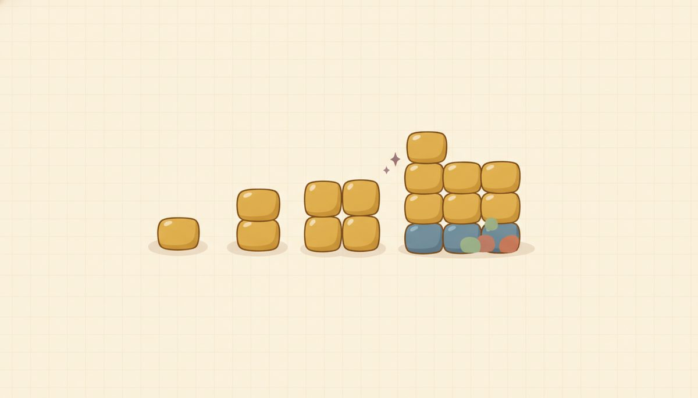

Exponent rules (including zero & negative exponents)

Exponents are just a shorthand for "multiply this by itself a few times." That's the whole idea, and every rule in this lesson comes straight out of it. The trick is to never let the shorthand pull you away from what it's counting.
When you're unsure what a rule should be, you can always write the factors out and count them. That habit, more than any memorized rule, is what keeps you out of trouble here.
These rules are the grammar of nearly every expression ahead: scientific notation in the next lesson, multiplying polynomials later in this one, and the two units after this. The way to make them stick is to see why each one is what it is, so that's how we'll build them.
Here's the first one, built from the ground up. Take x² · x³. Don't reach for a rule yet. Just write out what each piece means and count: $$x^2\cdot x^3 = (x\cdot x)(x\cdot x\cdot x) = x^5$$ Line up the x's: two of them, then three more, five in all. When you multiply two powers of the same base, you're pooling all their factors into one pile, so the exponents add. Hold onto that single picture: pool the factors, count them. Once that habit is in place, the add-versus-multiply mix-up later in this lesson has much less to grab onto.
Division works the same way, read in reverse. Take x⁵ over x²: $$\frac{x^5}{x^2} = \frac{x\cdot x\cdot x\cdot x\cdot x}{x\cdot x} = x^3$$ Two factors on the bottom pair off with two on the top, and a matched pair goes to one. A factor over itself is just 1. Three factors are left over on top, so x³. Dividing like bases is "how many factors are left after the pairs go to one," which is the same as subtracting the exponents.
Now a different move that looks similar but isn't. What about (x²)³, a power raised to a power? Write that out too: $$(x^2)^3 = x^2\cdot x^2\cdot x^2 = x^6$$ Three copies of x², so 2 + 2 + 2 = 6. Here the exponents multiply.
Sit with the contrast for a second, because it's the heart of the lesson. x² · x³ is two separate powers multiplied, so you add (2 + 3 = 5). (x²)³ is one power taken three times, so you multiply (2 · 3 = 6). Same-looking, opposite arithmetic. When you can feel which situation you're in, you've got the lesson.
Gathered up, here are the rules these pictures give you: $$x^a\cdot x^b=x^{a+b}\qquad\frac{x^a}{x^b}=x^{a-b}\qquad (x^a)^b=x^{ab}\qquad (xy)^a=x^a y^a\qquad x^0=1$$
That fourth one says a power on a product reaches every factor inside: (xy)ᵃ hands the exponent to the x and to the y alike. There's a matching version for a quotient, (x/y)ᵃ = xᵃ/yᵃ, with the exponent reaching the top and bottom both. You won't need it for this unit's problems, but it's the natural companion if you ever wonder.
Where x⁰ = 1 and negative exponents come from
The last two rules look like things you'd just have to memorize. You don't, and seeing why frees you from getting them backward.
Start with x⁰. Take any power over itself, say x³/x³, and read it two ways. By the quotient rule, you subtract the exponents: x³⁻³ = x⁰. But anything divided by itself is plainly 1. Both readings describe the same quantity, so: $$\frac{x^3}{x^3}=x^{3-3}=x^0 \quad\text{and}\quad \frac{x^3}{x^3}=1 \;\Rightarrow\; x^0=1$$ So x⁰ = 1 isn't a decree someone made up; it's forced. The rule you already trust leaves no other option.
Negative exponents come from the same move, just with more on the bottom than the top. Take x² over x⁵, and again read it two ways. The quotient rule gives x²⁻⁵ = x⁻³. Counting factors gives something you can see: two factors on top pair off with two on the bottom and go to one, leaving three factors stranded on the bottom, which is 1/(x³). Same quantity, two descriptions: $$\frac{x^2}{x^5}=x^{2-5}=x^{-3}\quad\text{and}\quad\frac{x^2}{x^5}=\frac{1}{x^3}\;\Rightarrow\;x^{-3}=\frac{1}{x^3}$$ So a negative exponent means reciprocal: flip it to the other floor of the fraction. It does not mean the number is negative. For positive x, x⁻³ is a perfectly ordinary positive number; the minus sign is an instruction to flip, not a sign on the value.
New words
- 10.1.d1 Base and exponent: in x⁵, x is the base, 5 is the exponent; x⁵ means x multiplied by itself 5 times.
- 10.1.d2 Zero exponent: x⁰=1 (for x≠0).
- 10.1.d3 Negative exponent: x⁻ᵃ=1/(xᵃ). A negative exponent means "reciprocal," not a negative number.
Read each worked example slowly, a line at a time, and ask why each line follows from the one above before you go on. Each one names the rule it's using, so you can match the move to its reason.
Worked example
Product rule, add the exponents: 10.1.w1 $$x^4\cdot x^3 = x^{4+3}=x^7$$
The trap, done right (add, don't multiply): 10.1.w2 $$x^2\cdot x^3 = x^{2+3}=x^5 \quad(\text{not }x^6;\ \text{count: }(xx)(xxx)=xxxxx)$$
Quotient rule, subtract: 10.1.w3 $$\frac{x^7}{x^2}=x^{7-2}=x^5$$
Power of a power, multiply: 10.1.w4 $$(x^2)^3 = x^{2\cdot 3}=x^6$$
Power of a product, exponent reaches the coefficient too: 10.1.w5 $$(2x)^3 = 2^3 x^3 = 8x^3$$
Zero & negative: 10.1.w6 $$x^0 = 1 \qquad\qquad x^{-2}=\frac{1}{x^2}$$
Quotient landing negative (ties the two ideas together): 10.1.w7 $$\frac{x^3}{x^5}=x^{3-5}=x^{-2}=\frac{1}{x^2}$$
The slip that catches the most people here is using the wrong rule between two that look alike: writing x² · x³ = x⁶, or (x²)³ = x⁵. The pull is to run the same operation in both cases, since the expressions look so similar.
The fix is always the same, and you already have it: write the x's out and count. x² · x³ is (xx)(xxx), five x's, so x⁵. (x²)³ is x² three times over, six x's, so x⁶. The quick check is to ask yourself, "am I multiplying two separate powers, or raising one power to another?" Add for the first, multiply for the second.
One more place to watch is the power-of-a-product rule, because it's easy to leave the coefficient behind. In (2x)³, the exponent greets everything inside the parentheses, the 2 included: it's 2³x³ = 8x³, not 2x³. The 3 is sitting on the whole 2x, not just the x.
The same question settles its zero-exponent cousin. In 5x⁰ there are no parentheses, so the exponent touches only the x, giving 5 · 1 = 5. But (5x)⁰ puts the whole 5x under the exponent, giving 1. Before you apply a 0 or a power, ask what the base actually is: just the x, or the whole thing?
Here's a clean case to get the method moving before the practice mixes things up. Simplify y⁵ · y. The lone y is y¹, so add the exponents: y⁵ · y¹ = y⁶. Nothing subtle there: just the product rule, once, with the silent exponent of 1 made visible.
Check yourself
- 10.1.c1 Why does x² · x³ add the exponents but (x²)³ multiply them? Convince yourself by counting x's, and write the count out. (x² · x³ = (xx)(xxx) = five x's = x⁵; (x²)³ = x² · x² · x² = six x's = x⁶.)
- 10.1.c2 Use the quotient rule on x⁴/x⁴ two different ways to explain why x⁰ = 1. (By the rule, x⁴⁻⁴ = x⁰; but anything over itself is 1; so x⁰ = 1.)
- 10.1.c3 Suppose someone says x⁻³ is a negative number. What would you show them to fix that? (Re-derive it from x²/x⁵: two factors pair off and go to one, three are left on the bottom, so x⁻³ = 1/(x³), a reciprocal, positive for positive x.)
You can now simplify with all four rules, and you can rebuild the zero and negative cases from scratch whenever memory wobbles. That rebuilding is what keeps you from learning them backward.
The set below mixes the rules together on purpose, which is harder than repeating one kind of problem and also what makes a skill last to next week. Every problem has its answer at the end of the lesson, and if one stalls you, the worked examples just above are built on the same moves. Item 18 is worth a careful look: it runs a negative exponent the other direction, as something you start with rather than land on.
Practice
Product rule:
- 10.1.1 x⁴·x³ 2. x²·x³ 3. y⁵·y 4. a³·a⁴·a²
Quotient rule:
- 10.1.2 (x⁷)/(x²) 6. (y⁶)/(y⁴) 7. (a⁵)/a
Power rules:
- 10.1.3 (x²)³ 9. (y³)⁴ 10. (xy)³ 11. (2x)³
Zero & negative exponents:
- 10.1.4 x⁰ 13. 5x⁰ 14. x⁻² 15. (x³)/(x⁵)
Mixed (combine rules):
- 10.1.5 (x²·x⁴)/(x³) 17. (3x²)(4x⁵) 18. x⁵·x⁻²
(Item 18 uses a negative exponent as an input rather than an answer: x⁵·x⁻² = x⁵⁺⁽⁻²⁾ = x³, the product rule with a negative exponent. It's the reverse of items 14 and 15, where the negative exponent was the result. The answer is positive because 5 + (−2) = 3.)
AnswersTry each one yourself first, then open to check.
1) x⁷ 2) x⁵ 3) y⁶ 4) a⁹ 5) x⁵ 6) y² 7) a⁴ 8) x⁶ 9) y¹² 10) x³y³ 11) 8x³ 12) 1 13) 5 14) 1/(x²) 15) 1/(x²) 16) x³ 17) 12x⁷ 18) x³